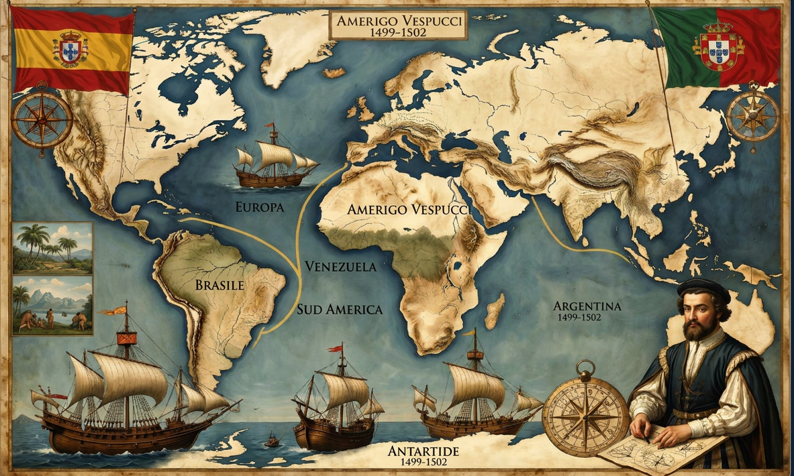

Amerigo Vespucci
La mente scientifica che guardò oltre l'illusione delle Indie e riconobbe i confini di un quarto continente.
A cura di: Cristian GennaroLa Mappatura del Sud America
LE ROTTE DELLE SPEDIZIONI DI VESPUCCI (1499 - 1502)
Illustrazione che mostra le quattro principali spedizioni di Amerigo Vespucci lungo le coste del Sud America.
Nato a Firenze nel 1454, colto e raffinato diplomatico per la famiglia Medici, Amerigo Vespucci non era un semplice marinaio, ma uno studioso di astronomia. Spostandosi in Spagna, prese parte a spedizioni fondamentali finanziate sia dalla corona spagnola sia da quella portoghese.
Navigando lungo le coste dell'attuale Brasile, dell'estuario del Rio delle Amazzoni e spingendosi fino alla Patagonia, Vespucci si rese conto che la linea costiera continuava ininterrottamente verso Sud per migliaia di leghe.
L'Intuizione Scientifica
Mentre Colombo cercava disperatamente di far coincidere i paesaggi caraibici con le sfarzose città asiatiche descritte da Marco Polo, Vespucci usò l'astronomia. Calcolando la posizione dei pianeti e rendendosi conto che la fauna, la flora e l'immensità territoriale non avevano alcun riscontro con i testi antichi, giunse alla logica conclusione: quella terra non era l'Asia, ma un blocco continentale immenso e autonomo.
Mundus Novus: Il Successo Editoriale
Nel 1503 le lettere scritte da Vespucci al suo mecenate a Firenze vennero raccolte e pubblicate sotto il titolo emblematico di Mundus Novus. Il libretto divenne il primo vero bestseller scientifico della storia europea: tradotto in decine di lingue, demolì in pochi mesi le vecchie credenze geografiche medievali.
Il Battesimo di un Continente

l'Errore dei Cartografi
Nel 1507, nel piccolo monastero di Saint-Dié-des-Vosges in Francia, il cartografo tedesco Martin Waldseemüller stava stampando un monumentale planisfero aggiornato. Impressionato dal testo di Vespucci, decise di disegnare le nuove terre occidentali inserendovi un nome celebrativo: America, dal nome latino del fiorentino (Americus Vespucius), declinato al femminile per uniformarsi a Europa, Asia e Africa.
Il Guardiano dei Segreti di Spagna
L'immensa competenza di Vespucci spinse il re Ferdinando d'Aragona a nominarlo, nel 1508, primo Piloto Mayor della prestigiosa Casa de la Contratación di Siviglia. Vespucci divenne l'uomo più influente della navigazione imperiale: esaminava i capitani, correggeva gli strumenti e custodiva il Padrón Real, la mappa ufficiale e segreta del regno su cui venivano tracciate, viaggio dopo viaggio, le nuove terre strappate all'oceano.